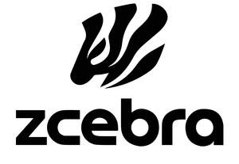

Trade Mark Journal No.2025/039 26 September 2025
UK00004264186 15 September 2025 (18,25,28,41)

- Class 18
- Sports bags; Bags for sports; Bags for sports clothing; Sport bags; Holdalls for sports clothing.
- Class 25
- Sports jerseys and breeches for sports; Sports footwear; Footwear for sports; Sports jerseys; Clothing for sports; Sports clothing; Sports shoes; Sports bras; Sports singlets; Sports jackets; Sports shirts; Sports wear; Sports clothing [other than golf gloves]; Clothes for sports; Jackets being sports clothing; Golf clothing, other than gloves; Tennis shirts; Clothes for sport; Sport shoes; Sports garments; Sport shirts; Tennis shoes; Cleats for attachment to sports shoes; Tennis sweatbands; Sports pants; Sports vests; Golf footwear; Footwear for sport; Footwear for use in sport; Golf shoes; Boots for sports; Moisture-wicking sports shirts; Soccer shoes; Volleyball shoes; Bowling shoes; Tennis shorts; Sports bibs; Tennis wear; Sports socks; Tennis socks; Clothing for wear in wrestling games; Tennis pullovers; Shoes for foot volleyball; Foot volleyball shoes; Moisture-wicking sports pants; Golf shirts; Soccer shirts.
- Class 28
- Pickleball paddles; Balls for sports; Sports balls; Inflatable balls for sports; Paddles for use in paddle ball games; Sport balls; Paddle balls; Balls for racket sports; Tennis balls; Paddle ball games; Balls for playing sports; Tennis uprights [sports equipment]; Paddleball paddles; Soccer balls; Soft tennis balls; Paddles for playing platform tennis; Platform tennis paddles; Nets for sporting ball games; Soccer ball bags; Platform tennis balls; Table tennis paddles; Lacrosse balls; Racketball balls; Golf balls; Softball balls; Lacrosse ball bags; Bocce balls; Balls for playing paddleball; Balls for playing platform tennis; Tennis ball throwing machines; Tennis ball retrievers; Polo balls; Skateboard paddles; Cases for tennis balls; Gloves for sports; Balls for playing lacrosse; Water polo balls; Balls for playing bocce; Petanque balls; Pumps for inflating sports balls; Balls for playing dodgeball; Table-tennis balls; Racquet ball gloves; Table tennis balls; Balls for playing racketball; Inflatable beach balls; Playground balls; Tennis ball serving machines; Tennis ball throwing apparatus; Table tennis paddle cases; Balls for playing handball; Balls for playing petanque; Pads for use in sports; Racquet ball nets; Baseball balls; Nets for sports; Tennis nets; Lawn tennis racquets; Bowling balls; Tennis balls [not soft]; Soccer ball knee pads; Guts for rackets [for tennis or badminton]; Balls being sporting articles; Tennis racquets; Lawn tennis rackets; Futsal balls; Inflatable swimming pools for recreational use [toys]; Gym balls for yoga; Bags adapted for bowling balls; Floorball balls; Gym balls; Golf flags [sports articles]; Rugby balls; Sports bows [archery]; Billiard ball racks; Golf ball retrievers; Boards used in the practice of water sports; Beach balls; Billiard balls; Rackets [for tennis]; Cricket balls; Field hockey balls; Swimming hand paddles; Squash balls; Golf ball markers; Sports equipment; Golf gloves; Gloves (Golf -); Gloves for golf; Racket cases [for tennis or badminton]; Clubs for gymnastics; Grip bands for table tennis bats; Badminton equipment; Golf club bags; Apparatus for use in training for the game of rugby [sporting equipment]; Grip tapes for golf clubs; Grips for golf clubs; Volleyball game playing equipment; Volleyball equipment; Golf practice nets; Handles for golf clubs; Caddie bags for golf clubs; Leg weights for sports training; Sports training apparatus; Covers for golf clubs; Tennis rackets; Headcovers for golf clubs; Gym chalk for improving hand grip in sports activities; Golf club grips; Sports equipment for pets; Shafts for golf clubs; Trolley bags for golf equipment; Golf training aids; Tapes with weights for balancing tennis racquets; Golf bags; Grip bands for tennis rackets; Badminton racquets; Golf mats; Badminton rackets.
- Class 41
- Organising of sports and sports events; Sports and fitness; Sports activities; Sports coaching; Organising of sports competitions and sports events; Organising of sports events and of sports competitions; Sports training; Training in sports; Sports refereeing; Sports officiating; Education, entertainment and sports; Sports club services; Sports betting services; Tuition in sports; Sports tuition; Sports entertainment services; Sports and fitness services; Competitions (Organization of sports -); Organization of sports competitions; Training of sports players; Organisation of sports events in the field of football; Organisation of sporting competitions and sports events; Coaching in the field of sports; Hosting of fantasy sports leagues; Organisation of sports tournaments; Instruction in sports; Organisation of sports competitions; Sports coaching services; Providing facilities for sporting events, sports and athletic competitions and awards programmes; Providing sports news; Sports camp services; Organising of sports competitions; Sports competitions (Organising of -); Competitions (Organising of sports -); Arranging of sports competitions; Organization of electronic sports competitions; Providing sports facilities for skiing; Providing online entertainment in the nature of fantasy sports leagues; Arrangement of sports competitions; Providing sports facilities for archery; Tournaments (Staging of sports -); Providing facilities for sports tournaments; Sport camps; Sports facilities (Leasing of -); Conducting of sports competitions; Providing sports facilities for playing polo; Sports education services; Winter sports instruction; Organising of sports events; Online sports betting services; Providing sports facilities for figure skating championships; Conducting of sports events; Operation of sports camps; Sports facilities (Hire of -); Entertainment in the nature of tennis tournaments; Entertainment in the nature of golf tournaments; Rental of sports or exercise equipment; Rental of sports diving equipment; Rental of sports equipment; Rental of tennis racquets; Rental of tennis courts; Sports tuition, coaching and instruction; Sport camp services; Camp services (Sport -); Sports instruction services; Coaching services for sporting activities; Fitness club services; Providing sports facilities for speed skating championships; Tennis instruction; Organization of sport fishing competitions; Rental of tennis equipment; Training of sports teachers; Organisation of professional golf tournaments or competitions; Planning of professional golf tournaments; Organisation of tennis tournaments; Football pools services; Organization of golf tournaments; Providing outdoor facilities for playing paintball games; Providing sports training facilities; Aerobics training services; Basketball camp services; Arrangement of professional golf tournaments; Arranging and conducting of youth soccer training programs; Providing of tennis court facilities; Providing tennis court facilities; Dance club services; Facilities for playing golf (Provision of -); Rental of sports equipment and facilities; Organisation of golf tournaments; Golf fitness instruction; Water polo club services; Soccer camp services; Rental of golf equipment.
Xiana López Valladares
Daniel Rodriguez Rodriguez
Representative: Bonita Baker